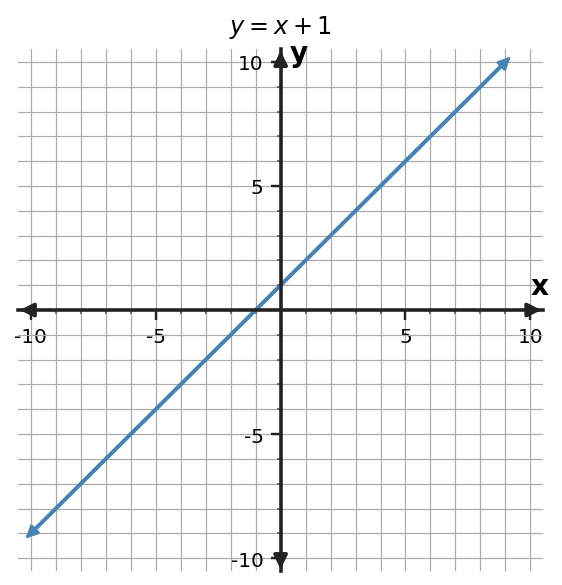

Predict
Two students move from (1,2) to (5,6). What is the rate of vertical change per horizontal step?
Make a visible prediction, sketch, or physical arrangement before the reveal.
Evidence
Use what you can observe
A volunteer walks 4 units right and 4 units up, then another volunteer uses 2 right and 2 up on the same line.
Record one rise/run pair and its ratio.
Reveal
Compare with the mathematical model

Both triangles give slope 1 because the ratio is preserved.
Discussion
What should we carry forward?
1. Why do different slope triangles give the same slope?
2. What does a negative slope require about direction?
3. How do units change the meaning of slope in a context?
We will interpret slope as a constant rate, not just a fraction formula.